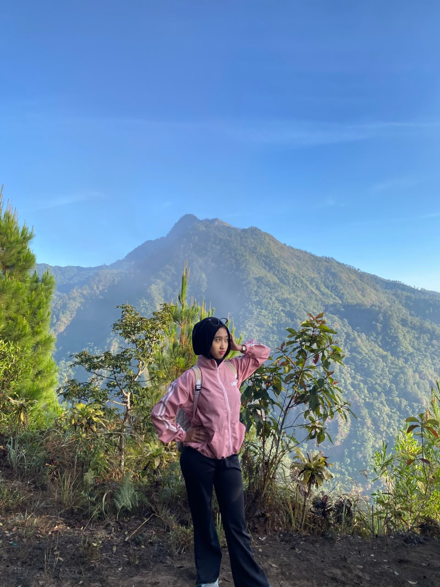

| Nama | : Devana Putri Yuanfatika |
| NIM | : 2513020010 |
| Alamat | : kecamatan Ngadiluwih, Kabupaten Kediri |
| TTL | : [Kediri, 16 Desember 2006] |
Seorang mahasiswa aktif Program Studi Sistem Informasi yang kini berada di semester 3. Memiliki ketertarikan yang tinggi dalam mempelajari perpaduan antara ilmu komputer, manajemen, dan proses bisnis. Saat ini sedang mendalami berbagai mata kuliah inti seperti perancangan basis data, analisis sistem, serta dasar-dasar pemrograman web, dengan tujuan untuk mampu menjembatani kebutuhan bisnis modern melalui solusi berbasis teknologi informasi.